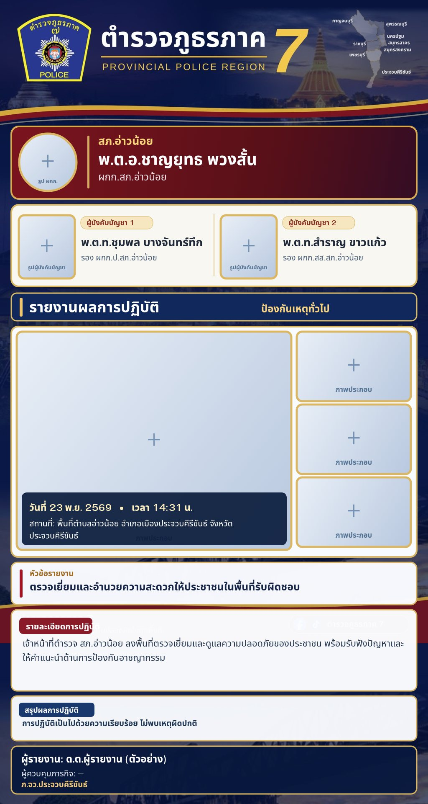

สิ่งที่เปลี่ยนแปลงในรุ่นนี้
จากเดิมที่มีเพียงข้อมูลผู้รายงานและผู้ควบคุม ตอนนี้รูปภาพรายงานที่สร้างจะมี แถบผู้กำกับการอยู่ด้านบน และ บัตรผู้บังคับบัญชา 2 ท่านอยู่ถัดลงมา พร้อมชื่อ ยศ ตำแหน่ง และรูปถ่ายที่อัปโหลดเองบนมือถือ โดยไม่ต้องแก้ไขโค้ดเมื่อเปลี่ยนเจ้าหน้าที่

ชื่อและตำแหน่งที่ระบบกรอกไว้เป็นเพียงข้อมูลตั้งต้นที่เคยแจ้งไว้ โปรดตรวจสอบกับหน่วยงานอีกครั้งก่อนเผยแพร่ รูปถ่ายเจ้าหน้าที่ไม่ได้ใส่มาในชุดนี้ คุณต้องอัปโหลดรูปจริงจากเครื่องของตัวเอง
1. วิธีใช้ระบบบนมือถือ iPhone / Android
- เปิดลิงก์เว็บไซต์ที่ Deploy แล้ว (เช่น
https://ชื่อเว็บ.netlify.app) - เลื่อนมาที่หัวข้อ ข้อมูลผู้บังคับบัญชา + รูปถ่าย
- แก้ไขชื่อ/ตำแหน่งผู้กำกับการ และผู้บังคับบัญชาอีกสองท่านให้ถูกต้อง
- แตะ เลือกรูป ที่ช่องแต่ละคน แล้วเลือกภาพถ่ายจากโทรศัพท์
- กด บันทึกข้อมูลผู้บังคับบัญชาไว้ในมือถือเครื่องนี้ เพื่อใช้ซ้ำครั้งต่อไป (ข้อมูลอยู่ในเบราว์เซอร์ที่กดบันทึก)
- กรอกประเภทงาน หัวข้อ วัน เวลา สถานที่ รายละเอียด และชื่อผู้รายงาน
- เพิ่มภาพประกอบเหตุการณ์ได้อีกไม่เกิน 4 ภาพ (รูปผู้บังคับบัญชาไม่นับรวม)
- กด ดูตัวอย่าง แล้วตรวจรายละเอียด
- กด ดาวน์โหลดภาพ JPG เพื่อเก็บรูป หรือใส่รหัส REPORT_PIN กด ส่งรายงานเข้า LINE เพื่อส่งข้อความและภาพเข้ากลุ่ม
ใช้งานสร้าง JPG ได้ทันทีแม้ยังไม่ได้เชื่อม LINE ส่วนปุ่มส่งต้องตั้งค่า LINE OA / Netlify Functions ตามข้อถัดไป
2. กรณีมีเว็บไซต์ Netlify รุ่นเก่าอยู่แล้ว (แนะนำ)
- แตกไฟล์
AoNoi_LINE_Report_System_v2.zipบนมือถือด้วยแอปไฟล์ หรือบนคอมพิวเตอร์ - เข้าระบบ GitHub ที่เชื่อม Netlify เดิม แล้วอัปโหลดไฟล์และโฟลเดอร์จาก ZIP รุ่นใหม่นี้ ทับไฟล์เดิม ใน repository เดิม (ต้องคงชื่อ
netlify.toml,package.json,netlify/functions,public) - Commit changes และเข้า Netlify → Deploys เพื่อตรวจว่า Deploy รุ่นใหม่ผ่านเรียบร้อย
- เปิด URL เว็บไซต์เดิมแล้วรีเฟรชหน้า ถ้ายังเห็นรูปแบบเก่าให้เปิดในแท็บส่วนตัวหรือเคลียร์แคช
- ตรวจว่าชื่อ/รูปที่ใส่ไปอยู่ในภาพรายงาน และลองกดทดสอบส่ง LINE
สำคัญ: ถ้ายังใช้ Netlify Site เดิม การ Deploy ทับไม่ควรต้องสร้าง LINE OA ใหม่หรือเปลี่ยน Webhook URL / Environment variables เพราะข้อมูลเหล่านี้ถูกตั้งไว้ที่บัญชี Netlify เดิม ไม่ใช่ไฟล์เว็บ แต่ควรตรวจสอบค่าและทดสอบอีกครั้งหลัง Deploy
3. กรณีติดตั้งใหม่ครั้งแรก
- สมัคร/เข้าสู่ระบบ GitHub และกดสร้าง Repository (ตั้งค่า
Privateได้ถ้าต้องการ) - แตก ZIP และอัปโหลด เนื้อหาทั้งหมดภายในโฟลเดอร์โครงการ ไปยัง Repository โดยให้
package.jsonและnetlify.tomlอยู่ที่ root - เข้าระบบ Netlify → Add new project → Import an existing project → GitHub → เลือก Repository
- Build command ใช้
npm run build; Publish directory ใช้dist; Functions ใช้netlify/functions(ตั้งค่าใน netlify.toml แล้ว) - กด Deploy และเปิดลิงก์เว็บไซต์ Netlify ที่ได้รับ
- สร้าง LINE Official Account ที่ LINE OA Manager และเชื่อม Messaging API ผ่าน LINE Developers Console
- ใน Netlify → Site configuration → Environment variables เพิ่ม 4 ตัวแปรตามตารางถัดไป และ Trigger deploy ใหม่
- ตั้งค่า Webhook URL ใน Messaging API ตามข้อ 5 และเชิญ LINE OA เข้ากลุ่ม
การอัปโหลดเฉพาะไฟล์ dist แบบลากวางลง Netlify อาจทำให้หน้าเว็บไซต์ใช้งานได้แต่ฟังก์ชันส่ง LINE ไม่ทำงาน ให้ใช้ GitHub เชื่อม Netlify ตามขั้นตอนข้างต้น
4. ตัวแปรลับที่ต้องตั้งค่าใน Netlify
| Key | Value |
|---|---|
LINE_CHANNEL_ACCESS_TOKEN | Channel access token จาก LINE Messaging API |
LINE_CHANNEL_SECRET | Channel secret จาก LINE Developers Console |
REPORT_PIN | รหัสสำหรับเจ้าหน้าที่ส่งรายงาน อย่างน้อย 8 ตัวอักษร ตั้งเองและรักษาเป็นความลับ |
LINE_PAIR_CODE | รหัสสำหรับจับคู่ LINE Group อย่างน้อย 8 ตัวอักษร และควรต่างจาก REPORT_PIN |
ห้าม วาง Token/Secret หรือ REPORT_PIN ลงใน HTML/JS ที่ GitHub หรือแจก ZIP ที่บรรจุรหัสจริง ให้เก็บเฉพาะใน Netlify Environment variables สำหรับ Functions
5. เปิดการแจ้งเตือนเข้า LINE Group
- ใน LINE Developers เปิด Messaging API Channel และนำ Webhook URL ไปใส่ดังนี้
https://ชื่อไซต์ของคุณ.netlify.app/.netlify/functions/line-webhook
- กด Verify URL และ Enable Use webhook
- อนุญาตให้ LINE OA เข้าร่วมกลุ่ม (Allow bot to join group chats)
- เชิญบัญชี LINE OA เข้า LINE Group ของหน่วยงาน
- พิมพ์คำสั่งภายใน LINE Group (ใส่รหัสจริงที่คุณตั้งเองแทนวงเล็บ)
เชื่อมรายงาน รหัสLINE_PAIR_CODEของคุณ
- เปิด
https://ชื่อไซต์ของคุณ.netlify.app/.netlify/functions/statusตรวจว่าreadyเป็นtrue - ในหน้าเว็บใส่ REPORT_PIN แล้วกด ทดสอบแจ้งเตือน เมื่อผ่านแล้วจึงส่งรายงานจริง
6. รายชื่อไฟล์ที่ต้องใช้
| ไฟล์ | หน้าที่ |
|---|---|
public/index.html | ฟอร์มใหม่ที่กรอกผู้บังคับบัญชาและรูปได้ 3 ท่าน |
public/app.js | วาดภาพรายงาน 1024×1920 / จัดรูป / ดาวน์โหลด / ติดต่อ LINE |
public/styles.css | เลย์เอาต์รองรับมือถือและแผงอัปโหลดรูป |
public/assets/region7-background.jpg | ภาพพื้นหลังตำรวจภูธรภาค 7 จากไฟล์แนบ |
netlify/functions/*.mjs | LINE Webhook, ตรวจ PIN, เก็บภาพ และส่งรายงาน |
netlify.toml, package.json, scripts/build.mjs | กำหนด Build และการติดตั้งขึ้น Netlify |
README.md, public/guide.html | คำแนะนำและคู่มือ |
7. ข้อจำกัดและการรักษาความปลอดภัย
- ข้อมูลเจ้าหน้าที่ที่กดบันทึกไว้จะอยู่ใน localStorage ของเบราว์เซอร์เครื่องนั้น ไม่ได้ซิงก์ทุกเครื่อง หากเปิดบนโทรศัพท์อีกเครื่องต้องใส่ใหม่
- การล้างข้อมูลเว็บไซต์หรือใช้โหมดไม่ระบุตัวตนอาจทำให้รูปและชื่อที่บันทึกไว้หาย
- LINE ต้องมี HTTPS URL ให้ดึงภาพมาแสดง ภาพที่ส่งจริงจะถูกเก็บบน Netlify Blobs และเปิดได้กับผู้ที่มีลิงก์ ควรใช้เฉพาะข้อมูลที่ได้รับอนุญาตเผยแพร่ และจัดการการเก็บรักษา/ลบตามนโยบายหน่วยงาน
- ระบบต้นแบบนี้ไม่ได้แทนระบบราชการที่ได้รับการรับรอง และยังต้องทดสอบ LINE กับบัญชีจริงหลังติดตั้ง
- ชื่อหน่วยงาน เบอร์โทรศัพท์ และตำแหน่งเจ้าหน้าที่ให้ตรวจสอบอีกครั้งก่อนใช้งานจริง
- LINE Notify หยุดให้บริการแล้ว จึงใช้ LINE Messaging API
อ้างอิง: LINE Messaging API · Group chats · Netlify Functions · Netlify Blobs